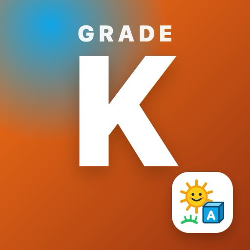

Kindergarten AdventurePrivacy Policy
No accounts, ads, analytics or tracking, and nothing is sent to us.
This policy explains how Kindergarten Adventure (“the app”), an educational app with 22 learning games for kindergarten (about ages 5–6), made for the App Store Kids category, developed by Kevin Fitzgerald, handles information.
Information we collect
None. Kindergarten Adventure does not collect, store, sell or share personal information on any server, and it does not include analytics, advertising, crash-reporting or tracking tools of any kind.
Information stored on your iPhone or iPad
To work, the app keeps the following on your iPhone or iPad only:
- Your child’s progress: levels, coins, XP, achievements, streaks, buddies, themes and which skills need practice
- Settings: the read-aloud voice and speed, and the chosen theme
- Which in-app purchases have been bought, so they keep working offline
It stays in the app’s own storage on your device (a copy is kept in the app’s preferences so progress isn’t lost) and is never sent to us or anyone else. Deleting the app removes it.
Made for kids
The app has no accounts, ads, analytics, tracking, chat, social features or third-party code. It plays only the games built into it and never opens web pages. It works offline.
Grown-ups only
Purchases, Restore Purchases, the Grown-Ups Dashboard, a request to rate the app and links to our other kids’ apps on the App Store are behind a grown-ups question (a multiplication written in words, answered in digits). Children never see prices.
Read-aloud
Every question is read aloud by your device’s own voices, on the device. Nothing is recorded, and the microphone and camera are never used.
Children’s privacy (COPPA)
The app is made for children and collects no personal information from them or anyone else, so there is nothing to share, sell or disclose.
Purchases
Kindergarten Adventure is sold through Apple’s App Store. Apple handles payment; we never see your payment details.
Children’s privacy
Because the app collects no personal information from anyone, it does not knowingly collect personal information from children.
Changes to this policy
If this policy changes, the new version will be posted on this page with a new effective date. If the app ever begins collecting data, this policy will be updated before that happens.
Contact
Questions about this policy or the app: k.fitzgerald310@gmail.com.